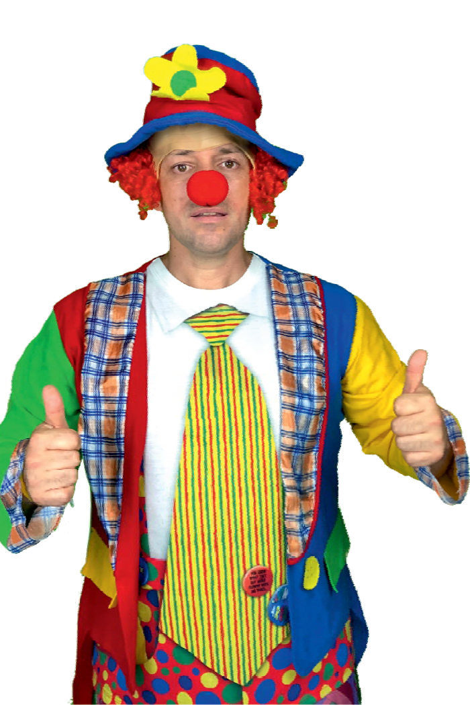
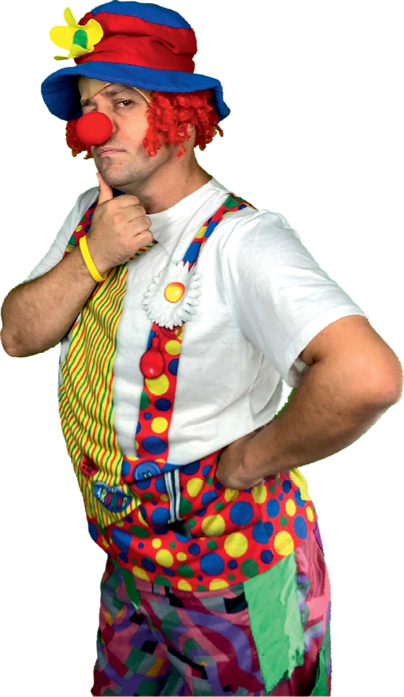
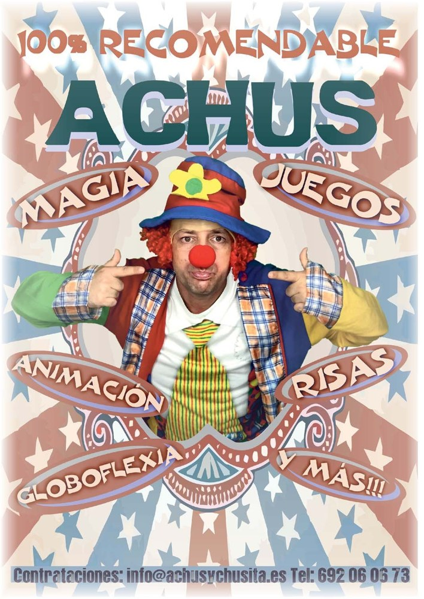
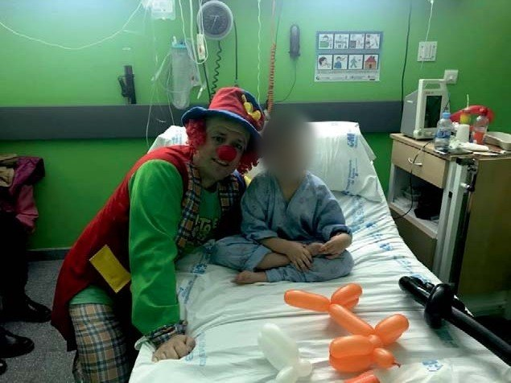
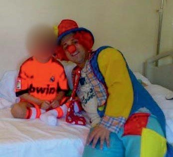
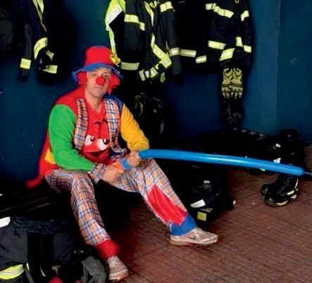
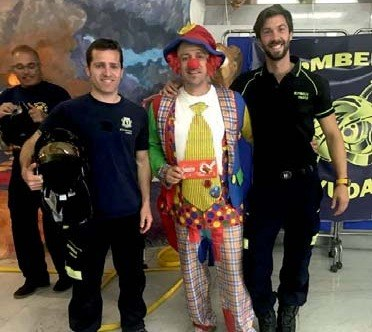
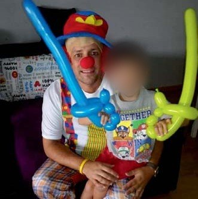

Pedir ayuda
es de valientes
Una charla de 50 minutos, en el aula y a dos voces, para chicos y chicas de 12 y 13 años. Con humor y con historias reales, les enseña que los golpes de la vida se superan y que pedir ayuda es de valientes.
Proponemos al Ayuntamiento de Arganda del Rey llevarla a los grupos de 1.º y 2.º de ESO de los institutos del municipio, para que sea gratuita para los centros y las familias.
A los 12 y 13 años cambia todo a la vez: el paso al instituto, los amigos, el cuerpo, las redes sociales. Y es una edad en la que cuesta mucho pedir ayuda: da vergüenza, parece de débiles o no se sabe a quién acudir.
Muchas charlas para adolescentes se quedan en el «tú puedes con todo». Nosotros queremos contar la otra mitad: que nadie puede solo, que todos tenemos días malos y que de ellos se sale con la ayuda de la gente adecuada.
adolescentes de entre 10 y 19 años padece algún trastorno mental.
La depresión, la ansiedad y los trastornos del comportamiento están entre las principales causas de enfermedad y discapacidad en la adolescencia.
Fuente: OMS, nota descriptiva «Salud mental del adolescente», 1-9-2025.
Porque la risa baja las defensas. Cuando dos adultos se ríen de sí mismos delante de la clase, el alumnado se relaja y escucha. Así, un mensaje serio llega sin sermones y se recuerda.
Porque una historia vivida convence más que un consejo. Contamos nuestras propias caídas y cómo salimos de ellas, sin dramatismo y adaptado a su edad.
Lo que no es: no es una terapia ni sustituye al trabajo de los equipos de orientación. Es una puerta de entrada: que el alumnado sepa que hay salida y a quién puede acudir dentro y fuera del centro.
Todos tenemos días malos.
De ellos se sale, y mejor acompañado.
Una charla-espectáculo a dos voces. Dos personajes muy distintos —que somos nosotros mismos— cuentan su vida, hacen reír, hacen pensar y hacen participar a toda la clase.
Andrés
Militar retirado, cocinero y payaso. Pone la disciplina con gracia, el humor físico y una idea que vale para todo: con lo que hay, se cocina.
Iván
De la corbata y la empresa privada al coaching. Pone la calma, la escucha y la improvisación, y responde a casi todo… con otra pregunta.
El contraste entre los dos es el motor del humor.
Empezamos riendo, bajamos a las historias de verdad y terminamos jugando y cantando. El alumnado sale del aula con energía y con un mensaje claro.
Cantan, levantan la mano, votan con aplausos y juegan. Siempre sentados, sin señalar a nadie y sin preguntas personales en voz alta. Quien no quiera participar no tiene que hacerlo.
El mensaje central, el que tienen que llevarse a casa:
Como en los contratos, la frase tiene «letra pequeña»: «tú puedes» no significa «tú solo».
La vida cambia la receta muchas veces. Lo que no sale como esperabas no es el final: es otro plato.
El que más grita, en internet o en el patio, no es el que más sabe. Para lo importante, pregunta a quien sabe.
Ninguna de nuestras historias se superó en solitario. Pedir ayuda no es rendirse.

exmilitar-payaso
el coach zen
Juntos: uno pone la disciplina con gracia; el otro, la calma y las preguntas. Dos historias reales con golpes muy duros y un final que se puede contar riendo. Un proyecto nacido en Arganda del Rey.
Antes de «¡Tú puedes!», Andrés lleva años subido al escenario con su personaje, Achús: espectáculos de humor, magia y globoflexia, eventos y, sobre todo, risas para los niños y niñas ingresados en hospitales.






Las caras de los menores aparecen difuminadas. Cuidamos su imagen también fuera del aula, y en las charlas en institutos no se toman fotos, vídeos ni audios del alumnado.
Hablamos de temas serios con chicos y chicas de 12 y 13 años. Por eso trabajamos con reglas claras, que pactamos con cada centro antes de entrar en el aula.
Un profesor o profesora está presente en el aula toda la sesión. Nunca estamos a solas con alumnos.
No captamos la imagen ni la voz del alumnado ni recogemos sus datos personales.
Dirección y orientación lo leen antes. Avisamos de los temas que tocamos para que el centro valore si algún alumno necesita un apoyo especial.
Autolesión, suicidio y medicación quedan fuera. Si surge algo delicado, lo derivamos al tutor o tutora y a orientación.
Nunca sobre nadie del público. Sin preguntas en voz alta sobre familia, salud, notas o aspecto físico.
El alumnado participa desde su sitio: sin levantarse, sin moverse por el aula y sin contacto.
No damos teléfonos, correos ni redes personales al alumnado ni le pedimos los suyos.
Los dos ponentes aportan el certificado negativo de delitos de naturaleza sexual, obligatorio para trabajar con menores.
Al terminar, cada alumno sabe a quién acudir en su centro. Con el visto bueno del centro, damos a conocer el Teléfono ANAR de Ayuda a Niños y Adolescentes (900 20 20 10), gratuito y confidencial.
| Público | 1.º y 2.º de ESO (12-13 años) |
| Grupo | Un grupo-clase, en su propia aula |
| Duración | 50 minutos: una sesión lectiva |
| Horario | En horario lectivo, por la mañana |
| Ponentes | Dos: Andrés Simarro e Iván Garrido |
| En el aula | El docente del grupo, durante toda la sesión |
| Material | Lo llevamos nosotros: gorros, nariz roja y rotuladores |
Lo único que necesitamos: una pizarra
Sin proyector ni equipo de sonido: una cosa menos que puede fallar.
Queremos saber si la charla funciona, y que lo sepa también el Ayuntamiento. Por eso cada sesión se evalúa con tres herramientas sencillas:
Escala del 1 al 5, sin texto libre ni datos personales. La reparte y la custodia el centro, que nos pasa solo los resultados agregados.
Una ficha breve con su opinión profesional: qué funcionó, qué mejorar y cómo reaccionó el grupo.
Al cerrar cada fase, un informe para el centro y el Ayuntamiento con los datos agregados y las mejoras aplicadas.
Medimos, aprendemos y mejoramos la charla de un centro a otro.
Un programa municipal «¡Tú puedes!» para que todos los grupos de 1.º y 2.º de ESO de Arganda del Rey puedan disfrutar de la charla, sin coste para los centros ni para las familias.
otoño de 2026
Primeras sesiones en institutos de Arganda, con su evaluación.
enero de 2027
Mejoras con los resultados de encuestas y valoraciones. Informe al Ayuntamiento.
febrero-junio de 2027
La charla en los grupos de 1.º y 2.º de ESO de los institutos que se sumen.
curso 2027-2028
Repetir con las nuevas promociones y estudiar otros cursos.
Lo que gana Arganda: todo el alumnado de 1.º y 2.º de ESO del municipio recibe el mismo mensaje, en su propio centro, sin depender del presupuesto de cada instituto o de su AMPA.
Presupuesto a medida. Lo preparamos según el número de centros y grupos que se sumen, con los resultados de los pilotos sobre la mesa.
Gracias por leernos.